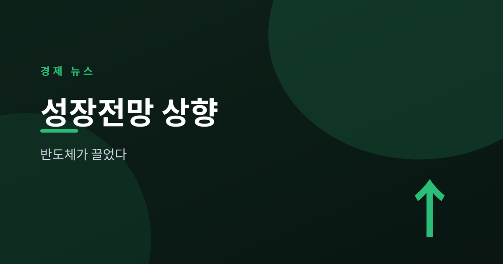
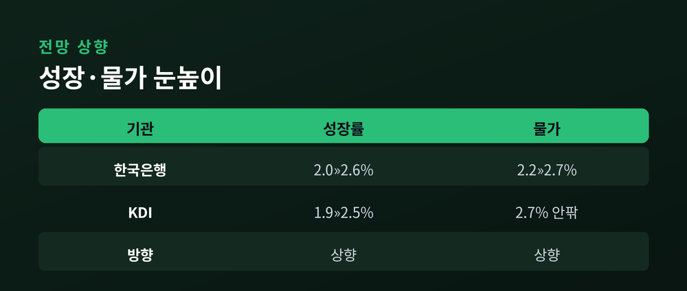
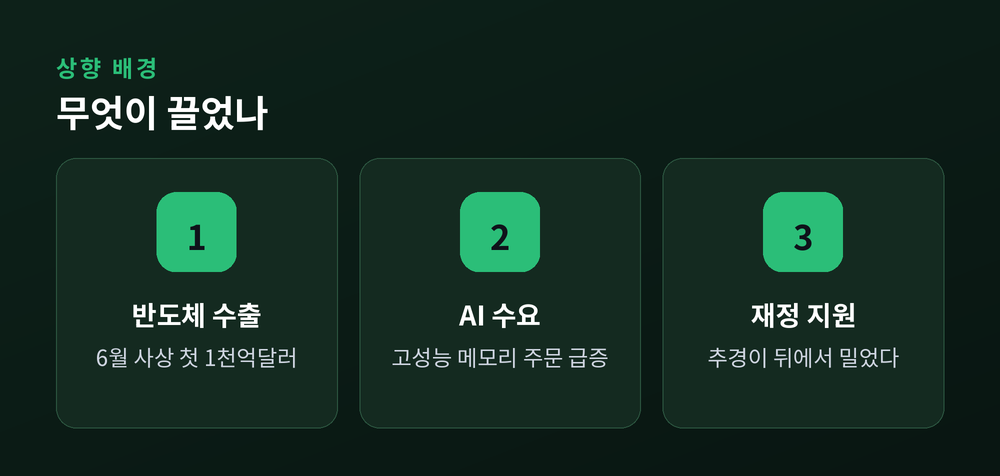
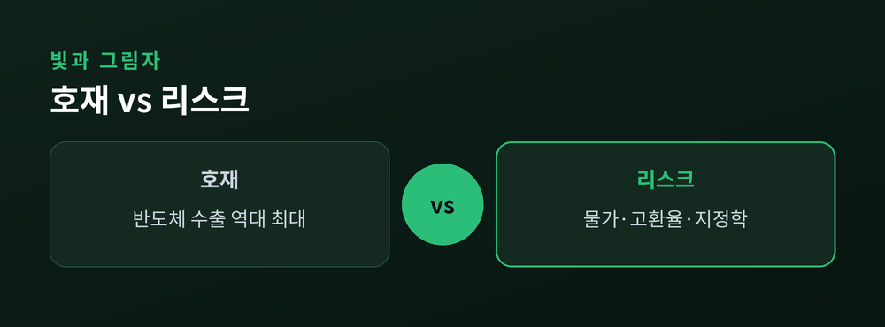
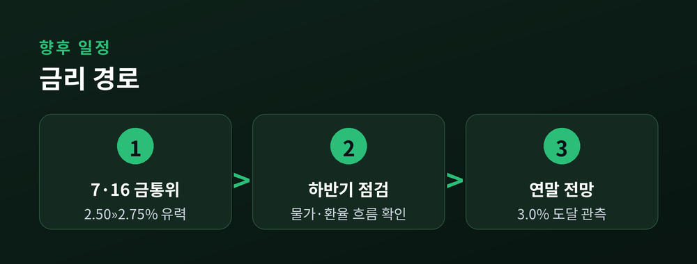

반도체 훈풍과 물가·환율의 그림자

한국은행이 올해 성장 전망을 크게 올려 잡았습니다. 2월에 2.0%였던 숫자가 5월 말에는 2.6%로 바뀌었습니다. 이번 글에서는 무슨 일이 있었고, 왜 중요하며, 앞으로 무엇을 지켜봐야 하는지 정리해 보겠습니다.
배경은 하나로 모입니다. 반도체 수출입니다. 다만 그 뒤에는 물가와 환율이라는 그림자도 함께 서 있습니다.
숫자만 보면 반가운 소식입니다. 그러나 그 안을 들여다보면 이야기가 조금 더 복잡해집니다.
한국은행은 지난 5월 28일 올해 성장률 전망을 2.0%에서 2.6%로 상향했습니다. 0.6%포인트를 한 번에 올린 셈입니다.
국책연구기관인 KDI도 흐름을 같이했습니다. KDI는 기존 1.9%에서 2.5% 안팎으로 전망을 높였습니다. 두 기관이 나란히 눈높이를 올린 것입니다.
성장률 2%대 중반은 최근 몇 년의 저성장 기조와 비교하면 확실히 밝은 신호입니다. 예전엔 하향 조정이 잦았습니다. 지금은 방향이 반대로 돌아섰습니다.

이번 상향의 주역은 분명합니다. 반도체입니다.
6월 수출은 사상 처음으로 월 1,000억 달러를 넘었습니다. 이 가운데 반도체가 약 448억 달러로, 1년 전보다 크게 늘었습니다. 상반기 전체 수출도 역대 최대 기록을 새로 썼습니다.
배경에는 인공지능 수요가 있습니다. 데이터센터와 AI 서버가 늘면서 고성능 메모리 주문이 밀려들었습니다. 가격과 물량이 함께 오른 것입니다.
정부의 추가경정예산도 힘을 보탰습니다. 반도체 호황이 앞에서 끌고, 재정이 뒤에서 밀어 준 구도입니다.

밝은 수치 뒤에는 부담도 있습니다.
물가 전망이 함께 올라갔습니다. 한국은행은 올해 소비자물가 상승률 전망을 2.2%에서 2.7%로 높였습니다. 국제유가 상승과 수요 회복이 겹친 결과입니다. 6월 소비자물가는 한때 3%대를 넘기기도 했습니다.
환율도 무겁습니다. 상반기 원/달러 평균 환율은 1,483원 안팎으로, 외환위기 이후 가장 높은 수준이었습니다. 고환율은 수출 기업에 유리한 면이 있습니다. 그러나 수입 물가를 밀어 올려 살림살이에는 부담이 됩니다.
여기에 지정학 리스크가 얹힙니다. 중동발 공급 불안과 유가 변동은 여전히 변수로 남아 있습니다. 좋은 소식과 걱정거리가 한 상에 놓여 있는 셈입니다.

이 모든 흐름은 한 곳으로 모입니다. 기준금리입니다.
한국은행은 7월 16일 금융통화위원회를 엽니다. 시장은 기준금리가 현재 2.50%에서 2.75%로 오를 것으로 봅니다. 전문가 대다수가 인상을 점치고 있고, 일부는 만장일치 결정 가능성까지 내다봅니다.
이유는 앞서 본 그대로입니다. 성장세가 살아났고, 물가와 환율 부담이 커졌습니다. 금리를 올려 과열과 물가를 다스리려는 판단입니다.
인상이 현실이 되면 3년 반 만의 방향 전환입니다. 시장은 연말 기준금리가 3.0%에 이를 가능성도 함께 계산하고 있습니다.

전망은 좋아졌지만, 조건이 붙습니다.
성장의 동력이 반도체 한 곳에 쏠려 있다는 점이 우선 걸립니다. 반도체 경기가 흔들리면 전체 그림도 함께 흔들릴 수 있습니다. 내수가 얼마나 따라오느냐가 관건입니다.
물가와 금리의 균형도 지켜봐야 합니다. 금리를 올리면 물가는 눌리지만, 가계와 기업의 이자 부담은 늘어납니다. 환율과 유가라는 바깥 변수도 언제든 방향을 바꿀 수 있습니다.
한국은행도 이 점을 잘 알고 있습니다. 성장과 물가, 어느 한쪽에 치우치기 어려운 국면입니다.
정리하면 이렇습니다. 반도체가 끌어올린 성장 전망은 반가운 소식입니다. 그러나 물가와 환율, 그리고 곧 다가올 금리 결정이 그 온기를 얼마나 지켜 줄지는 아직 열려 있습니다.
숫자가 오르는 계절입니다. 그 숫자가 우리 삶의 온도까지 데워 줄지는, 하반기의 몫으로 남았습니다.
※ 이 글은 정보 제공을 위한 해설이며 투자 권유가 아닙니다.
참고: 한국은행, KDI, 대한민국 정책브리핑, 파이낸셜뉴스, 세계일보